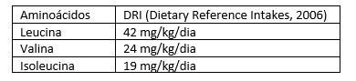
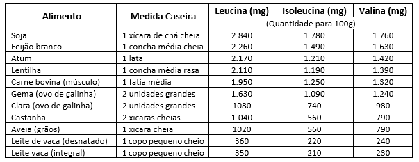

Leucina, Isoleucina e Valina. São aminoácidos essenciais portanto devem ser adquiridas pela dieta.
• Função no exercício físico
Melhora do sistema imune; Diminuição da fadiga; Melhora da dor muscular tardia; Melhora da performance
• Quando usar?
Alguns estudos mostram benefícios do uso antes e após o treinamento intenso.
• Recomendações:
• Efeitos do Excesso:
Dependendo da dose administrada, pode ocorrer o aumento das concentrações plasmática e musculares de amônia, que atua como agente de fadiga.
• É preciso suplementar BCAA?
Depende. É possível facilmente atingir às necessidades pela dieta. Por exemplo: um homem de 70 kg necessita ingerir 2.940mg de leucina, 1.680 mg de valina e 1.330 mg de isoleucina (DRI, 2006), em um típico suplemento de ACR (aminoácidos de cadeia ramificada) vendido na forma de comprimido (1,3g) contém 500 mg de leucina, 250 mg de valina e 250 mg de isoleucina. Somente uma fatia média de carne bovina (100g) é composta por 1.950 mg de leucina 1.320 mg de valina e 1.250 mg de isoleucina. Devido às contradições quanto aos seus, a suplementação de BCAA não é recomendada pela Sociedade Brasileira de Medicina Esportiva.
• Alimentos:
